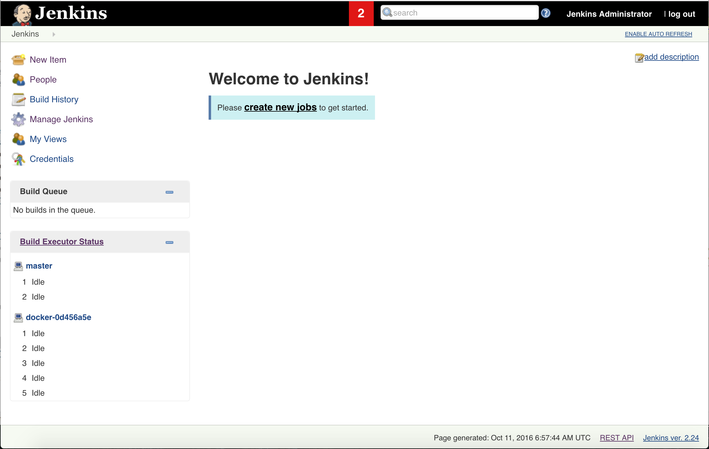

Real-World Jenkins
Antonio Beyah
Overview
- Introduction
- Welcome to Jenkins
- Jenkins Deep Dive
- Demo/Questions
Introduction
Who I Am
- Cloud Engineer:
Software Engineer focused on cloud technologies, specializing in automation.
-
Primarily in retail industry (development and operations)
- Best Buy (Cashier, Geek Squad, Geeksquad.com, BestBuy.com)
- SPS Commerce (Cloud Engineering)
- Target (Independent Consultant, Cloud Platform Engineering)
- Long time Jenkins user
What The Presentation Is About
- Best Practices
- Common Pitfalls
- Administration
- Monitoring and Scaling
- Introduction to Jenkins Ecosystem
What This Talk Is Not About
- Code Deep Dive (Stapler, Remoting, Plugin Development)
- Specific Automation Tools (Chef, Puppet, Ansible, etc)
- Specific Cloud Platforms (AWS, GCP, esp. not Azure)
- Windows(Ok, maybe an honorable mention)
Welcome to Jenkins
What is Jenkins?
According to jenkins.io:
"The leading open source automation server, Jenkins provides hundreds of plugins to support building, deploying and automating any project."
According to me:
"A mature platform that allows you to get stuff done."
Use Cases
- Build Server: Checking out code from SCM, builds the pieces, runs the unit tests, reports feedback.
- CI/CD Server: Build Server + spinning up an environment and testing it
- Cron/Batch Replacement: Checking out code from SCM, builds the pieces, runs the unit tests, reports feedback.
- Excuse Eliminator: Independent, unbiased, and accepting of new work
Key Information / Architecture
- Written in Java, Heavily tied to Groovy
- Uses a Master and Agent model
- Master (connect)-> Agent (JNLP)
- Master (connect)-> Agent (SSH Slaves Plugin)
- Agent (connect)-> Master (JNLP)
- Recommended: Agent (connect)-> Master (JNLP via Swarm Plugin)
- Master can tell agent to do anything
- Agent can tell agent to do anything (default)
- Almost all functionality comes from plugins
Jenkins Deep Dive
- Managing Jobs
- Handling Credentials
- Evolution to Pipeline
- Cluster Monitoring and Maintenance
Managing Jobs:
Job Components
- Wrappers: Impacts the overall build
- Parameters: User Inputs
- Triggers: The way the job gets started (timer or hook)
- SCM: Integration with source code management (Git, SVN)
- Builders: The steps that occur
- Publishers: Actions that occur after all of the builders have finished
Managing Jobs:
Best Practices
- Use the Jenkins Job DSL
- It's a plugin for jenkins that provides a Groovy-based DSL for declaring jobs
- You can even use it to create other seed jobs